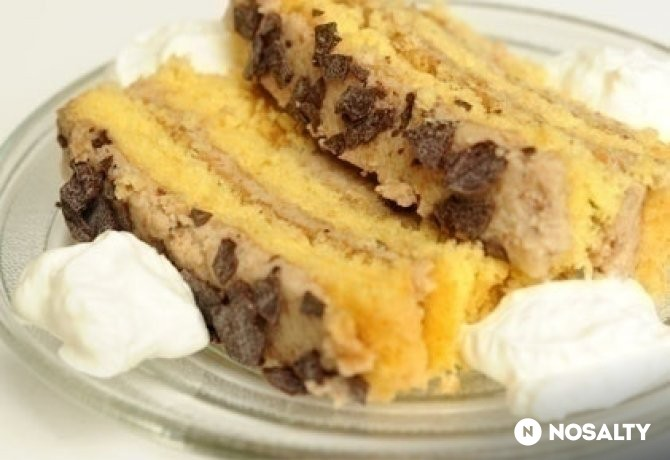

Gesztenyetorta
Vissza
Forrás

Story
Bármikor elkészíthető, mivel gyorsfagyasztott gesztenyepüré mindig van a hűtömben.
Jó vendégváró, mert a hűtőben 2-3 napig is friss marad.
Hozzávalók
-
A tésztához
- 6 db tojás
- 6 púpozott ek porcukor
- 6 evőkanál finomliszt
- 1 tk sütőpor
- 1 citromból nyert citromhéj (reszelve)
-
A töltelékhez
- 25 dkg gesztenyemassza
- 2 ek porcukor
- 1 dl habtejszín
- 2 ek rum
- 10 dkg vaj
-
A tetejére
- 2.5 dkg csokoládé (reszelve)
Elkészítés
- A tojásokat a porcukorral 20 percig gépi habverővel a legmagasabb fokozaton felverjük.
- A lisztet, reszelt citromhéjat és a sütőport összekeverjük, majd lazán beleforgatjuk a felvert tojásokba.
- Sütőpapírral bélelt tepsibe öntjük.
- Előmelegített, forró sütőben 200 fokon 5 percig, majd 175 fokon további 10 percig sütjük.
- Amikor kihűlt a piskóta, 3 felé vágjuk, és a gesztenyés töltelékkel megkenjük.
- A töltelékhez a vajat a porcukorral habosra keverjük, hozzáadjuk a rumot és a gesztenyemasszát, jól összekeverjük, majd a kemény habbá vert tejszínnel lazán elvegyítjük.
- A lapokat megtöltjük a krémmel, egy kevés krémmel pedig bevonjuk a tetejét és csokoládé reszelékkel megszórjuk.
Statisztika
| beküldve: |
2008.09.23. |
| tegnapi nézettség: |
7 |
| össznézettség: |
200 563 |
| elküldve: |
21 |
| receptkönyvben: |
1 376 |
| elkészítve: |
37/55 |
| Facebookon megjelent: |
- |